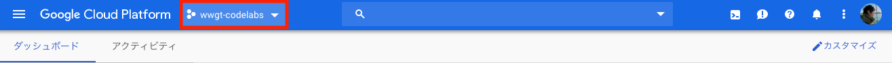

Go Conference 2019 Autumn に実施する Google App Engine のコードラボ と Google Cloud Functions のコードラボ のための準備を行います。
Google App Engine や Google Cloud Functions を利用するためには、Google Cloud Platform のプロジェクトが必要になります。今回は、Women Who Go Tokyo が用意したプロジェクトを利用します。
プロジェクトのアクセス制御に Google Groups を利用しているため、お知らせした Group に参加してください。
下記のURLから Google Cloud Console にアクセスし、プロジェクトを選択しましょう。
https://console.cloud.google.com/

用意しているプロジェクトは、下記の通りです。
これは、公開コマンドのアプリケーションIDとしても利用します。
コードラボの Google App Engine に公開する で「バージョン」を指定してデプロイを行います。
複数人で同じアプリケーションを用いて開発する場合、異なるバージョンでアプリケーションを公開することで、お互いのアプリケーションの上書きを避けることができます。
バージョンは一意のものを使う必要があります。今回は自分の Twitter ID を使うか、こちらのツール を使って他の人と重複しない文字列を生成してください。
また、バージョンは公開したアプリケーションを確認する際にも利用します。
プロジェクト内で他の人の関数と名前が衝突することを防ぐため、Google Cloud Functions の関数名は一意のものを生成して使います。
関数名にはハイフンや頭文字に数字を使用することはできません。今回は「Func」から始まる文字列を作成してください (例: Func1234123412) 。
Func 以下の10桁の数字を生成する際には Chrome の乱数生成機能 が利用できます。
また、関数名はデプロイの際にも利用します。
それでは, はじめましょう！